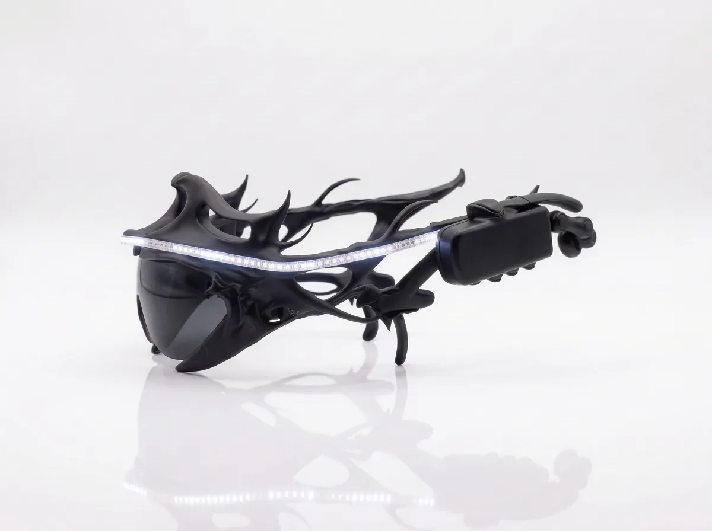
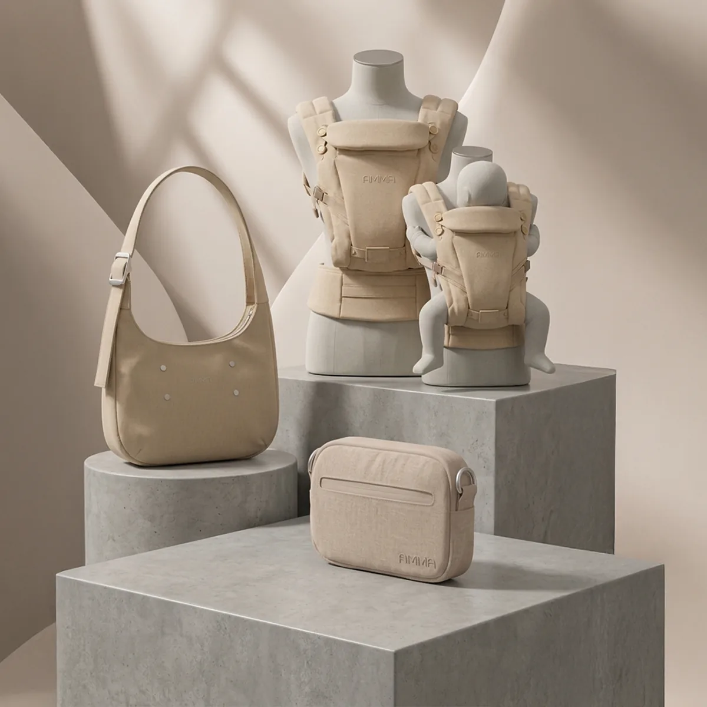
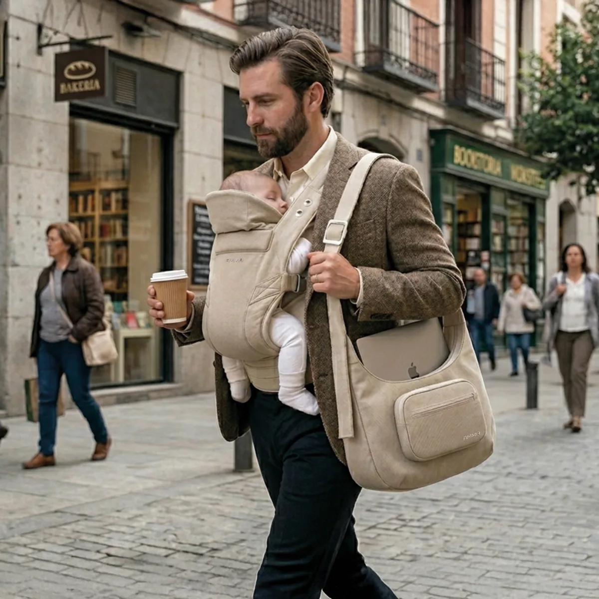
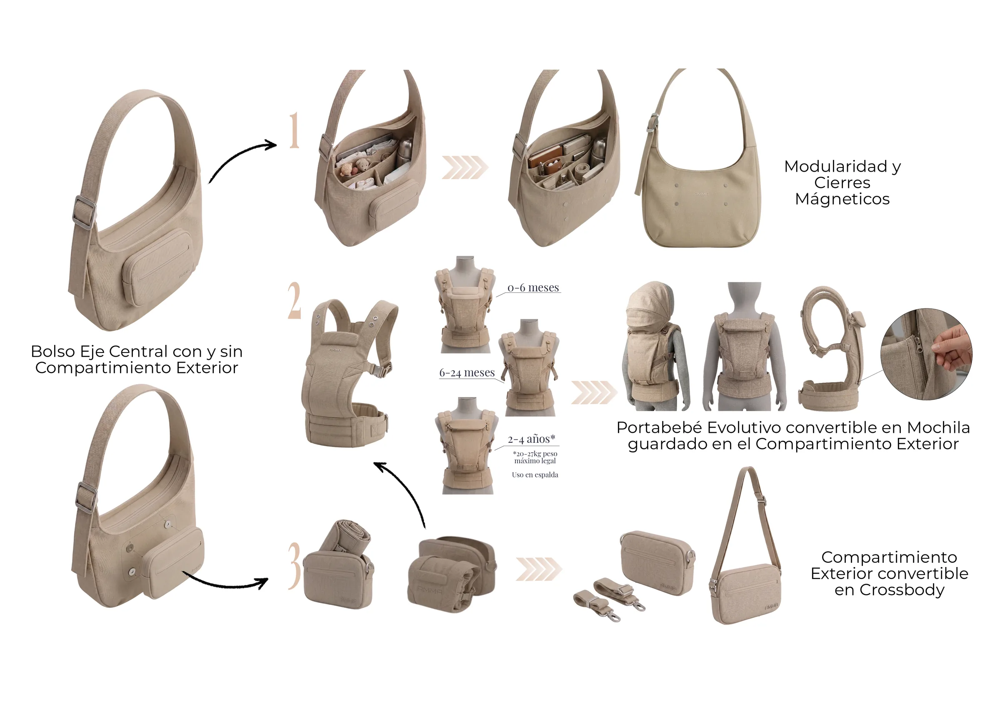
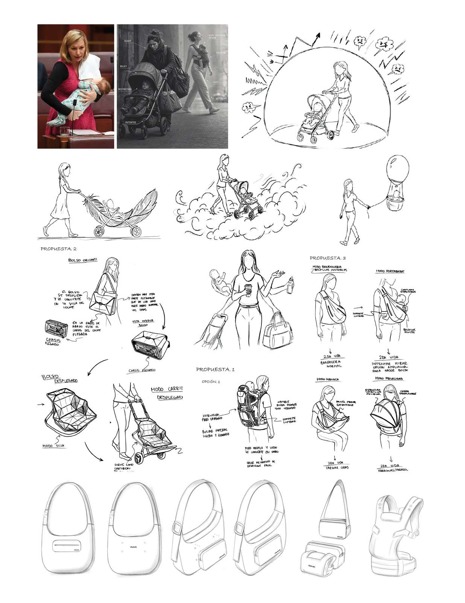
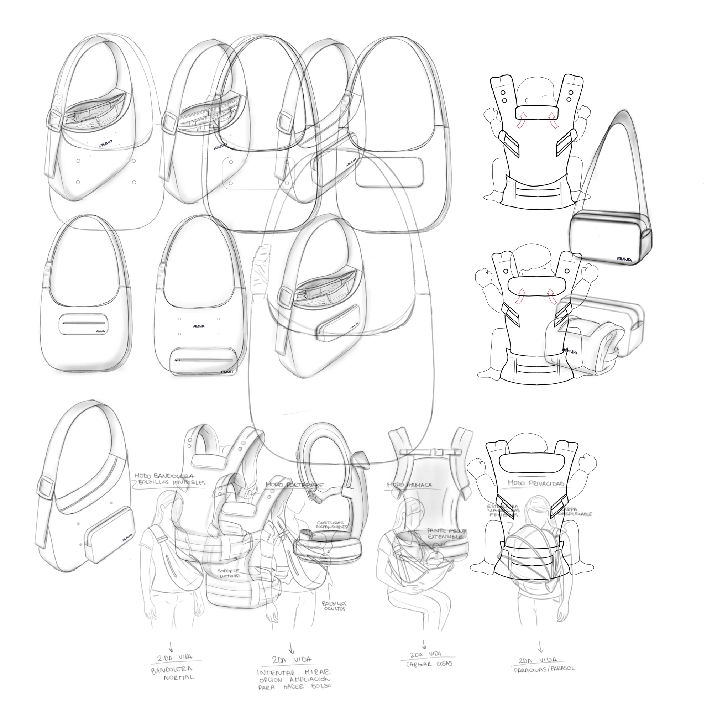
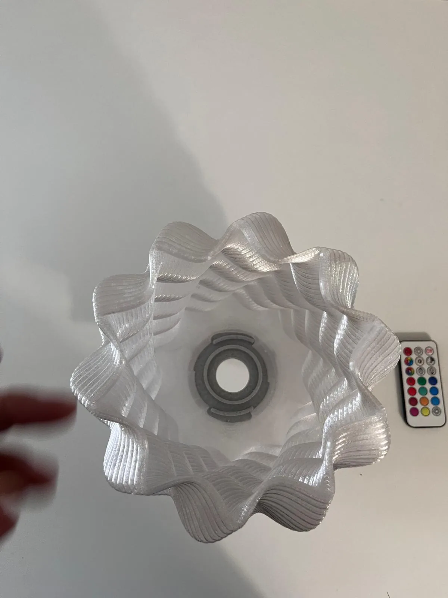

by Nicolle Lesmes
Dónde se crea con sentido...
Where creation makes sense...
Apasionada por transformar conceptos en objetos funcionales y listos para producción, equilibrando el valor estético con la utilidad técnica. Impulsada por un diseño intencional enfocado en la coherencia estructural, el refinamiento y la lógica de materiales en cada proyecto.
Experiencia práctica en todo el proceso de desarrollo, desde la investigación y el prototipado rápido hasta el modelado 3D avanzado y los flujos de fabricación, entregando soluciones fundamentadas en su contexto físico y operativo.
Con recursos y curiosidad natural, probando constantemente nuevos métodos de fabricación y marcos de diseño para abordar los retos modernos de ingeniería y diseño con una perspectiva precisa y constante.
Passionate about turning concepts into functional, production-ready objects that balance aesthetic value with technical utility. Driven by intentional design focused on structural coherence, refinement, and material logic across every project.
Hands-on experience across the entire development pipeline, from research and rapid prototyping to advanced 3D modeling and manufacturing workflows, delivering solutions grounded in their physical and operational context.
Resourceful and naturally curious, constantly testing new fabrication methods and design frameworks to tackle modern engineering and design challenges with a precise, consistent perspective.

Una selección de mis proyectos en diseño de producto, accesorios y lifestyle. De la idea al modelado 3D y la ejecución final. A selection of my projects in product design, accessories, and lifestyle. From concept to 3D modeling and final execution.
Abrir Flipbook Open Flipbook

Inglés (B2 - IELTS)English (B2 - IELTS)
Español - NativoSpanish - Native
Modelado 3D de joyería fina en oro en Rhinoceros, a medida de fabricación (engastes, asas, bisagras). Impresión en resina para la fundición en taller externo, renders y catálogos.
3D modelling of fine gold jewellery in Rhinoceros to manufacturing tolerances (stone seats, bails, hinges and closures). Resin prototypes for casting with an external workshop, from 3D file to finished piece, plus catalogue renders.
Moldes y troqueles diseñados en Rhinoceros e impresos en 3D que sustituyeron a los de cartón y redujeron errores. Producción de joyería en porcelana, latón y plata: Nerikomi, soldadura, recocido, pulido y montaje.
Designed and 3D-printed production moulds and cutting dies that replaced cardboard templates, reducing errors. Produced porcelain, brass and silver jewellery: Nerikomi, soldering, polishing and assembly.
Indalo: primer perfume de la marca, del naming al packaging, con 3D y presupuestos con fabricantes. OJ Napoli: estampados y fichas técnicas de la colección de baño 2025 (Top 5 Fuera de Serie).
Indalo: the brand's first fragrance, from naming to packaging, with 3D models and supplier quotations. OJ Napoli: prints and tech packs for the 2025 swimwear collection (Top 5 Fuera de Serie).
Dior's Embrace: regalo corporativo hecho con residuos de la Maison, con caja forrada en lona de exposición, textiles reciclados y rafia. Concepto aprobado por la marca.
Dior's Embrace: luxury corporate gift made only from Maison waste, with a box lined in exhibition canvas, recycled fabrics and raffia. Concept approved by Dior Iberia.
Giralia: botellero giratorio para un restaurante con estrella Michelin. Prototipo fabricado y destacado por el chef.
Giralia: hanging rotating bottle display with 11 lit turntables for a Michelin-starred bar. 3D model, CNC drawings and prototype, highlighted by the chef.
UDIT. Madrid.
Knightsbridge Schools International.
Business Management Institute Berlin.
Business Management Institute Berlin.
Crear una pieza donde el gótico y la tecnología colisionen, y la luz responda al entorno.
Create a piece where the Gothic and technology collide, and light responds to its surroundings.
Prototipo a mano, escaneo y modelado 3D, impresión y electrónica.
Hand-made prototype, 3D scanning and modelling, printing and electronics.
TPU impreso en 3D, tira LED reactiva al sonido y montura Ray-Ban reutilizada.
3D-printed TPU, sound-reactive LED strip and repurposed Ray-Ban frames.



Nemyx es una vía de escape donde la escultura gótica y la tecnología colisionan. Esta pieza actúa como un lienzo vivo, su sensor captura el ritmo acústico y lo traduce en pulsos de luz, como pinceladas en la oscuridad. Creada para observadores imaginativos que buscan perpetuar la sensibilidad y el arte frente a la indiferencia moderna.
Nemyx is an escape where Gothic sculpture and technology collide. This piece acts as a living canvas; its sensor captures acoustic rhythms and translates them into light pulses, like brushstrokes in the dark. It is crafted for imaginative observers seeking to preserve sensitivity and art against modern indifference.


La investigación partió de dos referencias: los ctenóforos, en los que la luz recorre el cuerpo como un arcoíris vivo, y las armaduras neogóticas, que convierten la protección en ornamento. Al requerir una morfología orgánica, descarté el diseño digital inicial: modelé el prototipo a mano en plastilina para capturar la fluidez anatómica y lo digitalicé con un escáner 3D. En Rhino, procesé la malla y apliqué simetría.
The research started from two references: comb jellies, where light travels across the body like a living rainbow, and neo-Gothic armour, which turns protection into ornament. Because it required an organic shape, I scrapped the initial digital design: I hand-modelled the prototype in clay to capture its anatomical fluidity and digitised it with a 3D scanner. In Rhino, I processed the mesh and applied symmetry.


Posteriormente, imprimí el exoesqueleto en TPU para garantizar flexibilidad estructural. En la fase técnica, soldé y programé la electrónica para que la luz reaccione acústicamente en tiempo real. Para finalizar, ensamblé el hardware y el modelo 3D sobre unas monturas Ray-Ban reutilizadas, integrando rigor técnico y sostenibilidad mediante upcycling.
Afterwards, I printed the exoskeleton in TPU to ensure structural flexibility. During the technical phase, I soldered and programmed the electronics so the light reacts to sound in real time. Finally, I assembled the hardware and the 3D model onto repurposed Ray-Ban frames, combining technical rigor with sustainability through upcycling.
La luz reacciona en tiempo real a la música. Haz clic para ver el vídeo completo. The light reacts to the music in real time. Click to watch the full video.
Audio: Because They Want Our Seat — Sara Landry & Nico Moreno. Uso exclusivamente conceptual y no comercial para demostración de hardware reactivo. Audio: Because They Want Our Seat — Sara Landry & Nico Moreno. Conceptual, non-commercial use only, to demonstrate reactive hardware.
Acabar con la obsolescencia biológica de los productos infantiles, que quedan inservibles en pocos meses.
End the biological obsolescence of baby products, which become useless within months.
Encuestas y entrevistas, estrategia, bocetos, planos de funcionamiento, patronaje, maqueta y sistema modular.
Surveys and interviews, strategy, sketches, functional drawings, pattern-making, mock-up and modular system.
Trabajo de Fin de Grado · UDIT, 2026. Algodón EtaProof y cierres magnéticos.
Bachelor's Final Project · UDIT, 2026. EtaProof cotton and magnetic closures.




AMMA nace como una startup de puericultura para acabar con la obsolescencia biológica de los productos infantiles. La industria actual obliga a comprar artículos que quedan inservibles en pocos meses porque el bebé crece. AMMA lo resuelve con un sistema de 3 fases evolutivas: portabebé, mochila infantil y bolso de adulto con crossbody desplegable.
AMMA was born as a childcare startup to end the biological obsolescence of baby products. The current industry forces parents to buy items that become useless within months as the child grows. AMMA solves this with a three-stage evolutionary system: a baby carrier, a toddler backpack, and an adult bag with a deployable crossbody strap.

Las encuestas y entrevistas con cuidadores mostraron que la pérdida de movilidad es su principal barrera diaria (3,83 sobre 5) y que el 82 % señala el cansancio como mayor factor de estrés. De ahí salen las decisiones del diseño: un portabebé integrado que libera las manos y crece de 0 a 4 años, y un bolso eje que reparte la carga y organiza las cosas del bebé y del adulto.
Surveys and interviews with caregivers showed that loss of mobility is their main daily barrier (3.83 out of 5) and that 82% name tiredness as the biggest stress factor. That drove the design decisions: an integrated baby carrier that frees the hands and grows from 0 to 4 years, and a core bag that spreads the load and organises both the baby's and the adult's things.
Un bolso de hombro con módulos interiores y cierres magnéticos: hoy lleva las cosas del bebé, mañana las del adulto.A shoulder bag with inner modules and magnetic closures: today it carries the baby's things, tomorrow the adult's.


Crece con el bebé de 0 a 4 años, se convierte en mochila infantil y se guarda en el compartimento exterior.It grows with the baby from 0 to 4 years, turns into a toddler backpack and stores in the outer compartment.


El compartimento exterior se separa del bolso y, con su correa, se convierte en bandolera.The outer compartment detaches from the bag and, with its strap, becomes a crossbody.


Construido en algodón 100% EtaProof de alta durabilidad y libre de toxinas, garantiza un rendimiento óptimo y seguro en todas sus configuraciones. Esta fusión de funcionalidad técnica y diseño consciente convierte a AMMA en una herramienta versátil y duradera.
Crafted from highly durable, 100% toxin-free EtaProof cotton, it ensures safe and optimal performance in every configuration. This blend of technical functionality and conscious design makes AMMA a versatile, long-lasting tool.


Las imágenes del producto se generaron con IA (Gemini, Manus y Vizcom) a partir de mis bocetos originales. The product images were generated with AI (Gemini, Manus and Vizcom) from my original sketches.

Ondas de luzWaves of light
Una lámpara impresa en 3D cuya forma se calcula como una ola, y cuya luz cambia de color sin cambiar de pieza. A 3D-printed lamp whose form is computed like a wave, and whose light changes colour without changing the piece.
Nace de la experimentación con el diseño paramétrico, dejando atrás la espiral tradicional de las lámparas impresas en 3D para explorar un lenguaje más fluido y controlado.
It stems from experimenting with parametric design, leaving behind the traditional spiral of 3D-printed lamps to explore a more fluid, controlled language.
Su geometría se inspira matemáticamente en las olas del mar, y la apertura superior proyecta la luz hacia arriba como una aurora boreal. Geometría y luz se entienden como un mismo gesto.
Its geometry is mathematically inspired by ocean waves, and the top opening casts light upwards like the northern lights. Geometry and light become a single gesture.


Con Rhino y Grasshopper controlo cómo se dispersa la luz y cómo se comporta el material capa a capa.
With Rhino and Grasshopper I control how light disperses and how the material behaves layer by layer.
La pantalla se imprime en PETG para difundir la luz sin perder resistencia al calor, y la base en PLA para darle rigidez.
The shade is printed in PETG to diffuse light without losing heat resistance, and the base in PLA for rigidity.
 InsertarInsert
InsertarInsert AjustarSecure
AjustarSecure BombillaBulb
BombillaBulb UbicarPlace
UbicarPlace Girar y ajustarTwist to lock
Girar y ajustarTwist to lock


Con un solo mando se elige el ritmo, el tono y la intensidad de la luz. Así no hace falta imprimir la misma lámpara en varios colores ni acumular stock.
A single remote sets the rhythm, tone and intensity of the light, so there's no need to print the same lamp in several colours or build up stock.
La bombilla RGBW de 4,8 W consume poco y dura mucho, y reduce los recambios.
The 4.8 W RGBW bulb uses little energy and lasts long, cutting replacements.



Colección de pendientes que re-imagina la colonización colombiana desde un futuro alternativo, donde las culturas indígenas triunfan. Fusiona estética indígena Colombiana y medieval con diseño 3D, simbolizando resistencia, tradición e innovación.
An earring collection that reimagines Colombian colonization through an alternative future where indigenous cultures triumph. It merges Colombian indigenous and medieval aesthetics with 3D design, symbolizing resistance, tradition, and innovation.


Creada en colaboración con Dior, ofrece una experiencia inmersiva que equilibra lujo y sostenibilidad. La caja combina cartón con textil reciclado que aportan color y simbolizan compromiso ambiental. Su diseño versátil incluye espacio para obsequios, hecho con rafia reciclada, y una carta personalizada, reforzando la exclusividad y conexión emocional con el personal de Dior.
Created in collaboration with Dior, it offers an immersive experience balancing luxury and sustainability. The box combines cardboard with recycled textiles, adding color and symbolizing environmental commitment. Its versatile design features a gift compartment made of recycled raffia and a personalized letter, reinforcing exclusivity and the emotional connection with Dior's staff.


Colección de bermudas masculinas para Old Jeffrey, que emplea diversas gamas de colores y
figuras geométricas con un efecto desgastado, creando un equilibrio entre un estilo moderno y un
toque vintage, ideal para destacar con originalidad.
Destacada en Top 5 de la revista Fuera de Serie
A men's shorts collection for Old Jeffrey, featuring diverse color palettes and geometric patterns with a distressed finish. It strikes a balance between modern style and a vintage touch, ideal for an original, standout look.
Featured in the Top 5 of Fuera de Serie magazine


Un fragmento de luz... A fragment of light...
Conexión entre la luz y el universo, simbolizando el equilibrio orbital y el dinamismo cósmico. Sus órbitas evocan el movimiento planetario mientras la base rocosa refleja solidez y estabilidad, ofreciendo un contraste entre lo etéreo y lo terrenal. Sus laterales están diseñados para servir como prácticos sujetalibros, integrando versatilidad y elegancia en un solo objeto. Soleris, una obra que transforma cualquier ambiente con su presencia escultórica y simbólica.
A connection between light and the universe, symbolizing orbital balance and cosmic dynamism. Its orbits evoke planetary motion, while the rocky base reflects solidity and stability, providing a contrast between the ethereal and the earthly. Its sides are designed to serve as practical bookends, blending versatility and elegance into a single object. Soleris is a piece that transforms any space with its sculptural and symbolic presence.


Transforma mezclas, eleva tu coctelería Transform mixes, elevate your mixology
Giralia, un botellero colgante giratorio desarrollado en colaboración con el Restaurante Quimbaya by Edwin Rodriguez ubicado en Madrid, España. Diseñado para optimizar el espacio superior de la barra de cocktails, que combina funcionalidad y estética para el almacenamiento de botellas, demostrando así la capacidad innovadora en el diseño de productos para la hostelería.
Giralia is a rotating hanging bottle rack developed in collaboration with the restaurant Quimbaya by Edwin Rodriguez in Madrid, Spain. Designed to optimize the overhead space of the cocktail bar, it merges functionality and aesthetics for bottle storage, showcasing innovative product design for the hospitality sector.


For Him, For Her...

Diseño de envase de perfume unisex, inspirado en la obra "Estudio sexual indiferenciado" de Teresa Solar. En el arte contemporáneo, la identidad de género es un tema que muchos artistas están abordando, y Solar desafía las etiquetas tradicionales.
A unisex perfume bottle design inspired by Teresa Solar's artwork, "Estudio sexual indiferenciado." Gender identity is a prominent theme in contemporary art, and Solar challenges traditional labels.


Este diseño reflexiona sobre la diversidad sexual y la no conformidad con las categorías de género en la vida cotidiana.
This design reflects on sexual diversity and gender non-conformity in everyday life.


La obra de Solar nos recuerda que las personas van más allá de las etiquetas de hombre o mujer, llamando a la diversidad y desafiando los moldes establecidos.
Solar's work reminds us that individuals transcend the binary labels of man or woman, advocating for diversity and breaking established molds.
Ondas de bienestar Waves of wellness
Zen tide es más que una apariencia estética: brinda una experiencia sensorial para disfrutar un momento de tranquilidad y explorar la salud mental y física. Cada onda representa cuerpo, mente y espíritu, invitándote a conectar con tus sentidos, encontrar equilibrio mental y sumergirte en una experiencia espiritual. Al descorchar y saborear cada vino, se crea un espacio para la relajación, la contemplación y el crecimiento personal.
Zen Tide goes beyond mere aesthetics: it offers a sensory experience to enjoy a moment of peace while exploring physical and mental well-being. Each wave represents body, mind, and spirit, inviting you to connect with your senses, find mental balance, and immerse yourself in a spiritual experience. Uncorking and savoring each wine creates a space for relaxation, contemplation, and personal growth.